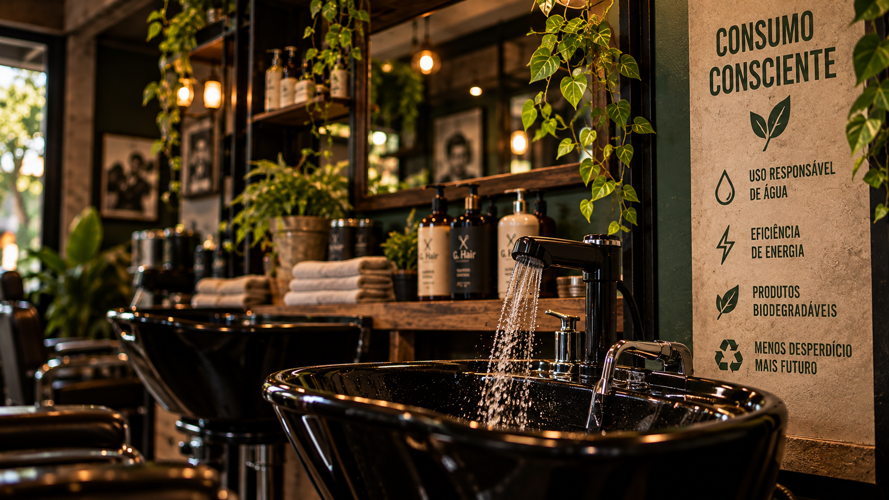

NOSSAS INICIATIVAS
Projetos que transformam
Pequenas mudanças na rotina podem gerar impactos positivos para as pessoas, para a comunidade e para o meio ambiente.
NOSSO COMPROMISSO
Pequenas ações. Grandes mudanças.
A Garage Hair busca incorporar práticas sustentáveis e sociais em sua rotina, conectando cuidado pessoal, consumo consciente e responsabilidade com a comunidade.
 01
01
RECICLAGEM
Garage Recicla
O Garage Recicla representa nosso compromisso com a separação e destinação responsável dos resíduos gerados durante a rotina da barbearia.
Embalagens plásticas, papel, papelão e outros materiais recicláveis são separados para reduzir o descarte inadequado e incentivar práticas mais conscientes.
RECURSOS NATURAIS
Consumo consciente
Água e energia fazem parte da rotina de qualquer barbearia. Por isso, buscamos utilizar esses recursos de maneira mais eficiente e responsável.
Pequenas atitudes, como evitar desperdícios, utilizar equipamentos de forma consciente e acompanhar o consumo, podem gerar resultados significativos ao longo do tempo.

02CUIDADO CONSCIENTE
Cosméticos naturais
Buscamos priorizar produtos com ingredientes de origem natural e alternativas que reduzam impactos desnecessários ao meio ambiente.
Também valorizamos embalagens recicláveis, reutilizáveis ou com possibilidade de refil, incentivando escolhas mais responsáveis no cuidado diário.
Ações que geram resultados
Conheça os indicadores e resultados simulados das iniciativas desenvolvidas pela Garage Hair.
Ver nossos resultados